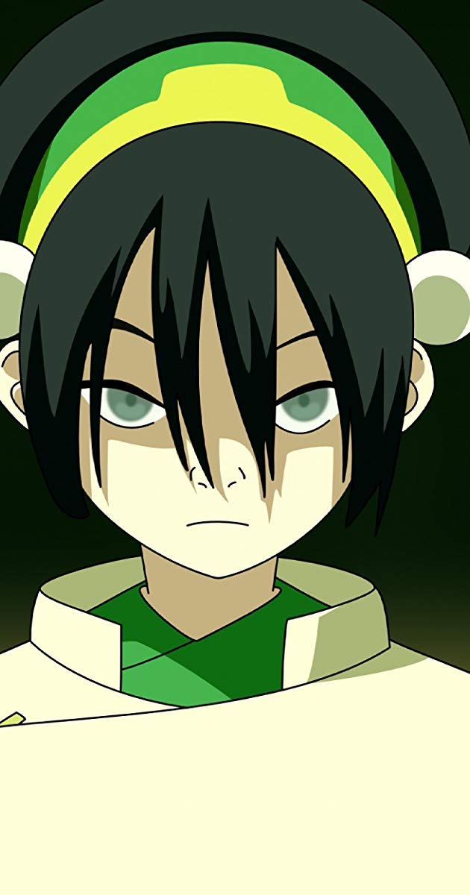
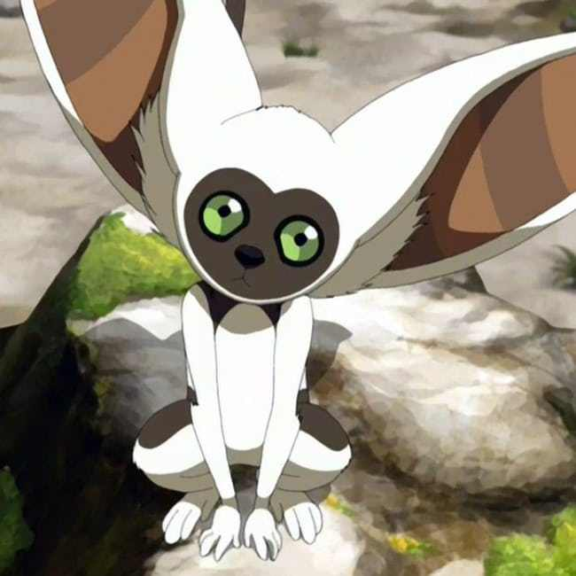
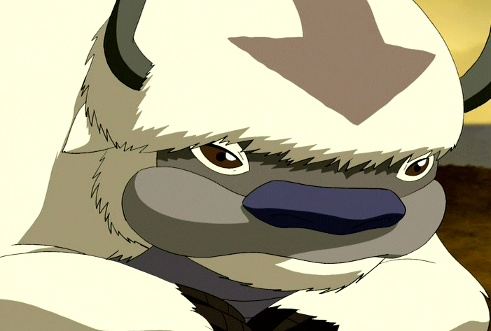
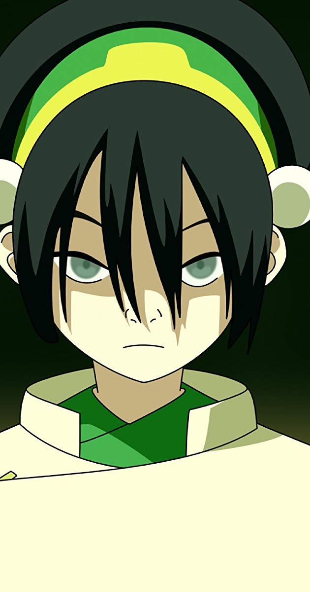
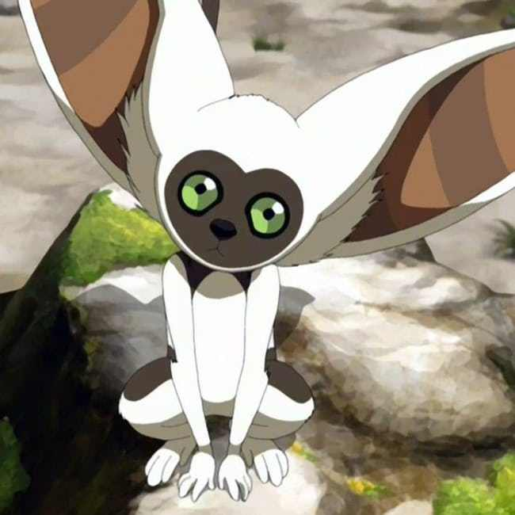
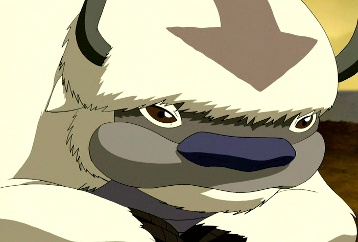

Aang
- Background
-
Aang was a male Air Nomad born in 12 BG and the avatar succeeding Avatar Roku.
Also, he was the Avatar during the Hundred Year War.
Right before the Hundred Year War began, Aang ran away from his home because
he was not ready to be the avatar at the age of 12*. He left home during a
storm which was so turbulent that he and Appa crashed into the ocean.
Aang went into his Avatar State and frozen himself and Appa in an iceberg.
Consequently, they remained there for one hundred years. During this time, the Air
Nomads were massacred by the Fire Nation under Firelord Sozin who Also
waged war upon the other nations. Katara and Sokka were gathering food when the iceberg
with Aang and Appa emerged out of the water. Katara broke the ice using on of Sokka's weapons.
When Aang emerged, still biologically twelve years old and the last airbender alive.
Young Aang was tasked with ending the Hundred Year War. In order to do this he had to
master the other three elements (water, earth, fire) and defeating Fire Lord Ozai, the
grandson of Firelord Sozin.
- Personality
- Despite his horrific loss and the heavy burdens he was forced to bear,
Aang remained a kind and goofy kid at heart. He was also very shy around
Katara at times because of his crush on her. He finally told her his feelings
only for her to be hesitant. Aang was hurt at first and things became awkward
between them. By the end of the series, they worked out their feelings for
each other. Because of his Air Nomad upbringing he tried to see the best in
everyone and did not want to kill since Air Nomads preached about peace and
love for all living things. He even spared the Firelord's life in the last battle
and opted to take away his bending instead. He was given this ability by a giant
lion turtle.
*Avatars are usually told they are the avatar at age 16.
 




